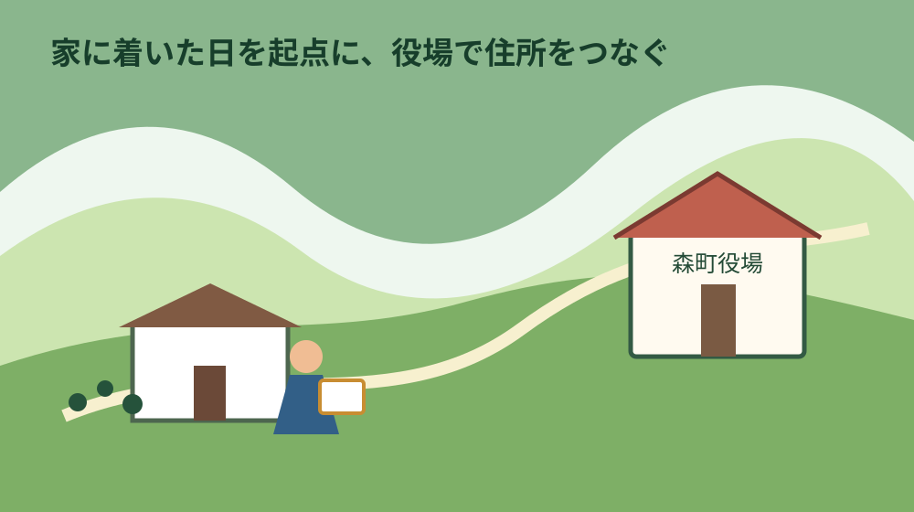
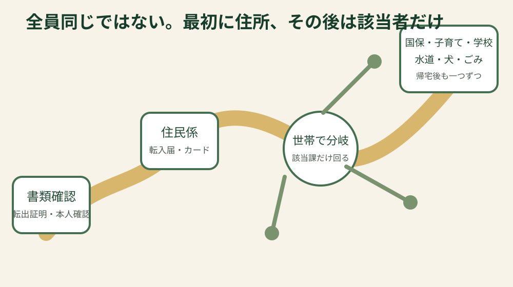
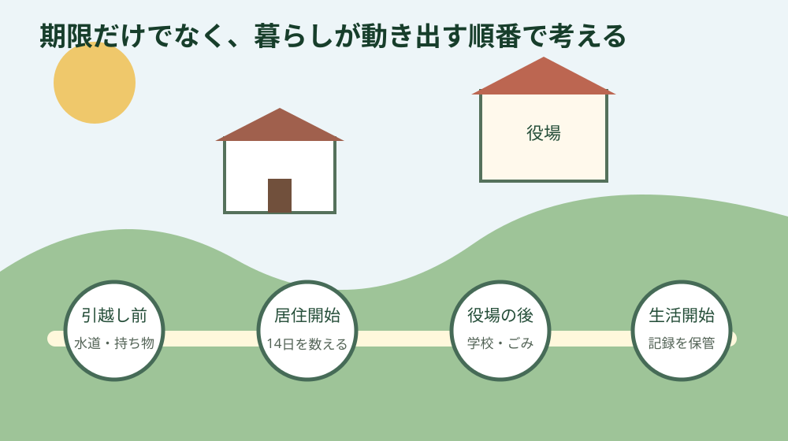

静岡県周智郡森町・転入手続き
森町へ引っ越すときの手続き｜転入届から生活開始まで
森町へ住み始めたら、最初に住所を公的につなぐ転入届を進め、その後は自分の世帯に必要な手続きだけを選びます。全員が同じ窓口を全部回る必要はありません。このページでは、期限だけの一覧ではなく、荷ほどきの途中でも迷わない実行順に整理します。
結論：住み始めた日を起点に、まず転入届を終える
森町外から森町へ住所を移した人は、引っ越しが完了した日から14日以内に転入届を出します。ここでいう起点は、賃貸借契約の開始日や鍵を受け取った日ではなく、実際に新住所で生活を始めた日です。日程を曖昧にしたまま「月末まで」と覚えるより、居住開始日を家族の予定表へ書き、その日から14日を数える方が安全です。
転入届はマイナポータルだけでは完了しません。電子証明書が有効なマイナンバーカードがあれば来庁予定を申請できますが、森町公式は転入・転居の手続きには窓口への来庁が必要と案内しています。オンライン申請をした当日に来庁すると、情報の反映が間に合わず当日中に処理できない場合もあるため、予約と届出を同じものと考えないことが大切です。
窓口は森町役場1階の住民生活課住民係です。公式ページに掲載された電話番号は0538-85-6312です。役場全体の開庁時間と、ワンストップサービス利用者向けに示された受付時間には表現の違いがあるため、終了間際を避け、複数課を回る人は午前か早めの午後に動くと落ち着いて確認できます。
先に住民係で住所異動を終えると、マイナンバーカードの継続利用、電子証明書の住所変更、印鑑登録、国民健康保険、子どもの手当や学校など、住所を前提にする次の手続きへ進みやすくなります。ただし、その日に全て終えることを目標にして、書類不足のまま窓口を急いで回る必要はありません。該当する制度と担当課を先に絞る方が、再来庁を減らせます。

転入届の期間、持ち物、代理人、マイナンバーカードの扱いは森町公式の転入届ページで確認しました。個別の世帯関係、国外転入、カードの暗証番号不明などは、来庁前に住民係へ確認してください。
来庁前にそろえる物と、家族で決めること
基本の持ち物は、前住所地が発行した転出証明書、窓口に来る人の本人確認書類、所有者全員分のマイナンバーカードまたは住民基本台帳カードです。引っ越しワンストップサービスや特例転出を使った場合は、紙の転出証明書ではなくカードを使う形になります。転出元でどの方法を選んだかを、家族内で共有しておきましょう。
本人確認書類は、運転免許証、顔写真付きマイナンバーカード、在留カードなど一つで確認できるものと、資格確認書、介護保険被保険者証、年金証書、学生証など複数を組み合わせるものがあります。何を持っているかで必要点数が変わるため、名称だけで自己判断せず、森町公式の区分を見て準備します。
本人または同一世帯員など以外の人が届け出る場合は、委任状や代理権限の確認が必要です。転入届の代理と、マイナンバーカードの継続利用や署名用電子証明書の変更は同じ条件ではありません。代理人がカードを持参しても即日で終わらない場合があるため、本人が行けない事情があるときほど、住民係へ事前に関係と希望手続きを伝える必要があります。
カードの暗証番号も確認します。森町公式は、カード所有者全員分を持参し、暗証番号が必要と案内しています。暗証番号を家族へ不用意に渡すのではなく、誰が窓口へ行くか、本人が同行できるかを先に決めます。住所変更後の継続利用は、転入手続き後90日以内に行わないとカードが失効するとの注意もあります。
国外から転入する日本人は、転出証明書の代わりに戸籍謄本、戸籍の附票、パスポートが必要になる場合があります。本籍が森町なら不要になる書類もあります。外国籍の人が国外から転入するときは、転入する全員のパスポートと在留カードが案内されています。家族ごとに条件が異なる分野なので、一般的な国内転入の持ち物表だけで準備を終えないでください。
同時に印鑑登録を希望するなら、登録する実印も持参します。住民票や印鑑証明が住宅、車、勤務先の手続きで必要でも、転入当日に何通必要かは提出先によって違います。先に提出先へ証明の種類と発行日条件を聞けば、使わない証明を余分に取らずに済みます。
| 確認する人 | 追加で考える物・連絡先 | 先に決めること |
|---|---|---|
| マイナンバーカード所有者 | 所有者全員分のカード、暗証番号 | 本人が同行するか |
| 子どもがいる世帯 | 健康保険情報、母子健康手帳、学校関係書類 | 園・学校へ連絡する日 |
| 国保・年金の手続きがある人 | 前の保険・退職等が分かる資料 | 住民係後に国保年金係へ行くか |
| 犬を飼っている人 | 前住所地の鑑札等 | 登録変更の確認先 |
役場当日は「全員共通」と「該当者だけ」を分ける
全員共通の最初の一歩は、住民生活課住民係で転入届を出すことです。窓口では新住所、世帯主、転入者、前住所などを確認します。アパート名や部屋番号、同居先の世帯との関係が曖昧だと確認に時間がかかるため、賃貸借契約書や住所が分かるメモを手元に置いておくと説明しやすくなります。
住民票上の「世帯」は、同じ建物に住む家族という日常語と必ずしも同じではありません。同居する親世帯と一つにするか分けるかは、便利そうという理由だけで決めず、生計や生活の実態を正しく伝えて住民係へ相談します。保険料や給付へ有利になるといった目的で形式だけを変える判断は避けてください。
住所異動後、カードを持つ人は券面の住所変更、継続利用、必要に応じて電子証明書の手続きをします。署名用電子証明書は住所変更により利用できなくなる場面があるため、確定申告やオンライン契約を予定している人は、その場で利用再開に必要な手続きを確認します。
国民健康保険へ加入する人、前住所地でも国保だった人、勤務先の健康保険から外れた人は、国保年金係へ進む可能性があります。2024年以降は従来の保険証を前提にした説明が古くなりやすく、マイナ保険証の登録状況によって資格情報のお知らせや資格確認書などの扱いが変わります。受診予定が近い人は、何を提示すればよいかまで確認しましょう。
子どもがいる世帯は、児童手当、こども医療費、予防接種、乳幼児健診、保育園・幼稚園、学校の手続きが候補になります。全て健康こども課だけで終わるわけではありません。年齢、加入保険、在園・在学状況を一枚に書き、担当課へ「転入した。子は何歳で、今どこに通っている」と伝えると、必要な入口を案内してもらいやすくなります。
小中学生は教育委員会と学校への連絡が必要です。転入届を出せば学校側へ自動的に全情報が渡り、翌日から何も準備せず登校できるわけではありません。転校元でもらった書類、教科書、給食、通学区域、初日の持ち物、放課後児童クラブの利用希望を分けて確認します。
高齢者がいる世帯では、国保や後期高齢者医療だけでなく、介護保険、要介護認定、利用中サービスの引継ぎが関係することがあります。介護サービスを切れ目なく使う必要があるなら、引越し後に初めて相談するのではなく、転出元の担当者やケアマネジャーと森町側の窓口を早めにつなぎます。

帰宅後に整える水道、ごみ、交通、暮らしの記録
水道の使用開始は、住民票の転入届とは別の手続きです。森町の案内では、給水の開始・中止は上下水道課へ届け出ます。休日を挟むと希望日に対応できないことがあるため、入居前に使用開始日を伝えるのが基本です。蛇口を開けたら水が出たから届出済みだろう、と判断しないでください。
入居直後は、全ての蛇口を閉めた状態でメーターが動いていないか、屋外水栓や給湯設備から漏れがないかを確認します。賃貸なら異常を写真と時刻で記録し、貸主や管理会社へ連絡します。修理費の負担を町の制度だけで判断せず、契約と設備の責任範囲を確認することが必要です。
ごみは住所の地区と収集日を確認します。森町の年度別カレンダーは、燃やせるごみ、資源物などの日を地区ごとに示します。同じ森町内でも曜日が同じとは限らないため、以前の住所の習慣を引き継がず、新居の集積所と出し方を確認します。集積所の利用方法は、近隣や管理会社から案内される場合もあります。
粗大ごみ、家電四品目、リチウムイオン電池、事業活動で出たごみは、通常の家庭ごみと出口が異なります。引越し段ボールの片付けと一緒に何でも集積所へ出すのではなく、町の分別案内で品目ごとに確かめます。無許可の回収業者へ安易に渡さないことも、後のトラブルを避ける一歩です。
犬を飼っている人は、前住所地の登録情報を持って変更手続きを確認します。新規登録と住所変更、飼い主変更は同じ手続きではありません。鑑札、愛犬カード、狂犬病予防注射関係の資料をまとめ、生活環境係へ「転入に伴う変更」であることを伝えます。
運転免許、車検証、銀行、保険、勤務先、通信、通販サイトなどの住所変更は役場外の手続きです。公的手続きが終わった安心感で忘れやすいため、「本人確認」「車と移動」「お金」「仕事」「家」の五つに分け、完了日を記録します。特に車を毎日使う世帯では、免許や車庫、任意保険の住所を後回しにしないでください。
森町は森、一宮、飯田、園田、天方、三倉など、地区によって駅やバス、買い物、通院、山道の条件が違います。住所変更の紙だけで暮らしが完成するわけではありません。平日朝、夕方、雨の日に、新居から職場、学校、買い物、医療機関まで実際に移動し、使える経路と代替手段を家族で確かめます。

子ども、高齢者、同居、国外転入で増える確認
乳幼児がいる家庭は、こども医療費、児童手当、予防接種、健診の情報を一つずつ引き継ぎます。転出元の受給者証が森町でもそのまま使えるとは限りません。健康保険情報、母子健康手帳、予診票、未接種が分かる記録を持ち、健康こども課へ確認します。
保育園や幼稚園は、住所を移せば同時に入園が決まる制度ではありません。募集時期、定員、保育の必要性、年度途中の扱いを別に確認します。住宅契約の後で送迎が難しいと分かることがないよう、可能なら転居前に園の場所、開園時間、通勤経路を重ねておきます。
小中学生の転校では、転出元の学校と森町の教育委員会、転入先の学校の三者をつなぎます。書類だけでなく、給食開始、アレルギー対応、教材、体操服、通学路、放課後の居場所を確認します。子ども本人には、大人の手続きの進み具合と初日の予定を、年齢に合わせて伝えてください。
高校生は町外へ通うことも多く、鉄道、バス、自転車、家族送迎の組合せが生活を左右します。住所変更の手続きと同時に、通学定期、最終便、雨天時、駅までの自転車置場を確認します。学校へ届ける住所変更や通学経路の申請は、各校の指示に従います。
親世帯と同じ家へ戻る人は、住民票の世帯、家の名義、生活費の負担、介護、郵便物を一緒に考えがちです。しかし、それぞれ確認先が違います。住民票上の世帯は住民係、所有権は登記、介護は福祉窓口、税は税務課へと分け、家族の口約束だけで結論を出さないようにします。
国外からの転入は、在留資格、戸籍、パスポート、住民登録、保険など確認項目が増えます。翻訳が必要な家族がいる場合も、一般記事の持ち物一覧だけで来庁せず、住民係へ事前連絡します。氏名表記や続柄が書類間で異なる場合は、そのまま持参し、自己判断で書き換えないことが重要です。
再来庁を減らす注意点と、住まいの確認
よくある行き違いは、マイナポータルで予約したので転入届も終わったと思うことです。オンラインは来庁予定の申請であり、カードを持って窓口へ行きます。来庁直前の申請は反映待ちになる場合があるため、受付画面や申請状況を確認してから移動します。
二つ目は、家族のカードを一枚だけ持って行くことです。異動する家族のうちカード所有者が複数いるなら、全員分が関係します。ただし、暗証番号や代理手続きには制限があるので、カードを集めれば全て代理で終わるとは限りません。
三つ目は、住所表記を不動産広告や地図アプリだけで決めることです。契約書、郵便受け、住居表示、地番は目的が異なります。届出に使う住所は、住民係へ正確に伝え、建物名と部屋番号も確認します。
四つ目は、行政手続きと家の状態確認を切り離すことです。転入直後に雨漏り、水圧、境界、駐車、道路、浄化槽、残置物の問題が見つかることがあります。賃貸なら管理会社、購入なら仲介や専門家へ記録を添えて確認し、役場へ行った日に全て解決すると考えないでください。
森町で家を買った、親の家へ戻った、空き家を使い始めた人は、登記名義、固定資産税、接道、農地、境界も別の台帳で整理します。住所を移したことは、建物の所有権が移ったことを意味しません。売るか住み続けるか未定でも、所在地、名義、鍵、修繕箇所、家族の連絡先を残しておくと後の判断が楽になります。
私は、小さな不動産業者として、転入手続きの直後に家の売買を急がせる必要はないと考えます。まずは道路、水道、境界、登記、維持費を事実として並べることです。暮らしが落ち着いてから選べるように、住民票の手続きと不動産の判断を別の箱に分けておくのが現実的です。
よくある質問
転入届はオンラインだけで終わりますか
終わりません。マイナポータルで来庁予定を申請できますが、森町公式は転入・転居は窓口での手続きが必要と案内しています。カードを持って住民生活課住民係へ行きます。
転入届の14日はいつから数えますか
引っ越しが完了し、新住所で生活を始めた日から数えます。契約日や鍵の受領日とずれる場合は、実際の居住開始日を住民係へ正確に伝えてください。
家族の代理でカードの住所変更もできますか
転入届の代理条件とカード・電子証明書の代理条件は同じではありません。同一世帯か、それ以外か、本人が15歳以上かなどで変わり、即日で終わらない場合があります。事前に住民係へ確認してください。
町内で引っ越した場合もこのページの手順ですか
町内転居は転入届ではなく転居届です。異動した日から14日以内に届け、カードや水道、学校など該当する変更を確認します。
住民票を移せば学校や水道も自動で変わりますか
自動で全て完了するわけではありません。学校は教育委員会・学校、水道は上下水道課、犬は生活環境係など、別の確認が必要です。
公式情報源と次に確認するページ
制度と窓口は2026年8月9日に確認しました。日付、受付、必要書類は変わることがあるため、来庁直前に公式ページを開いてください。
個別の進め方は、マイナンバーカード、水道開始・中止、ごみ収集日と分別、犬の登録、転校手続き、森地区の暮らしも確認してください。